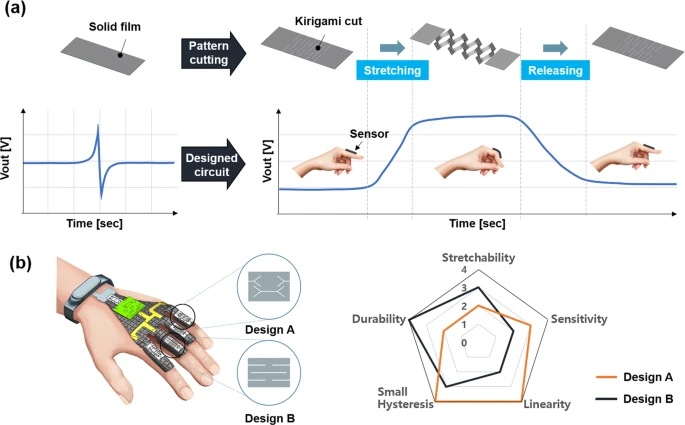

Seongheon Hong
Undergraduate Student
Mechanical Engineering and Naval Architecture & Ocean Engineering in Seoul National University
GitHub
Curriculum Vitae(PDF)
Email : wbfprp@snu.ac.kr
Research Interests : Wearable Sensor, Biomechanics, Rehabilitation Robotics, Robot Locomotion
Welcome to my homepage. I am Seongheon Hong, undergraduate student at Seoul National University. If you have any questions or interested in my research, feel free to email me!

Research Experience
@ IDIM Lab. in SNU

Piezoelectric strain sensor with high sensitivity and high stretchability based on kirigami
design cutting
Young-Gyun Kim, Ji-Hyeon Song, Seongheon Hong, Sung-Hoon Ahn
npj Flexible Electronics, 2022. ( paper )
Unfortunately, source code for emebedded controller(nrf52810) was lost. It will be uploaded as soon as found in some directory...
Some additional information not inclued in manuscript(mainly about application glove):
Embedded: nRF5 SDK, softdevice s132, SEGGER Embedded Studio.
PC: Max 8
Young-Gyun Kim, Ji-Hyeon Song, Seongheon Hong, Sung-Hoon Ahn
npj Flexible Electronics, 2022. ( paper )
details
application glove schematic & PCB design / codeUnfortunately, source code for emebedded controller(nrf52810) was lost. It will be uploaded as soon as found in some directory...
Some additional information not inclued in manuscript(mainly about application glove):
Embedded: nRF5 SDK, softdevice s132, SEGGER Embedded Studio.
PC: Max 8


Multi-view Human Pose and Shape Estimation Using Learnable Volumetric Aggregation
Soyong Shin, Eni Halilaj
arXiv, 2020. paper / demo video (below)
Soyong Shin, Eni Halilaj
arXiv, 2020. paper / demo video (below)

Estimation of Kinematics from Inertial Measurement Units Using a Combined Deep Learning and
Optimization Framework
Eric Rapp*, Soyong Shin*, Wolf Thomsen, Reed Ferber, and Eni Halilaj ( * equal contribution)
Journal of Biomechanics, Vol 116, 110229, 2021 paper / code / abstract (ASB 2020) / project page
Eric Rapp*, Soyong Shin*, Wolf Thomsen, Reed Ferber, and Eni Halilaj ( * equal contribution)
Journal of Biomechanics, Vol 116, 110229, 2021 paper / code / abstract (ASB 2020) / project page

A Multimodal Dataset for Modeling Human Pose Priors
Eni Halilaj, Soyong Shin, Eric Rapp, Xiang Donglai, and Yaadhav Raj
American Society of Biomechanics, 2020 abstract / project page
Eni Halilaj, Soyong Shin, Eric Rapp, Xiang Donglai, and Yaadhav Raj
American Society of Biomechanics, 2020 abstract / project page
@ Lomin

Optical Character Recognition in Korea
J. Kang, B. Lim, S. Kang, S. Lee, and Soyong Shin
2019 Korean AI Grand Challenge, 2019. 1st Prize YouTube
J. Kang, B. Lim, S. Kang, S. Lee, and Soyong Shin
2019 Korean AI Grand Challenge, 2019. 1st Prize YouTube
@ Seoul National University Towing Tank

Computational Analysis of the Performance of a Vertical Axis Turbine in a Water Pipe
H. Yeo, W. Seok, Soyong Shin, Y.C. Huh, B.C. Jung, C-S. Myeong, and S.H. Rhee
Energies, 2019. paper
H. Yeo, W. Seok, Soyong Shin, Y.C. Huh, B.C. Jung, C-S. Myeong, and S.H. Rhee
Energies, 2019. paper
Honors and Awards
Nick-G. Vlahakis Fellowship
Awarded by Carnegie Mellon College of Engineering
Selected 1 of 2 among CMU College of Engineering MS students (Jan. 2021)
Awarded by Carnegie Mellon College of Engineering
Selected 1 of 2 among CMU College of Engineering MS students (Jan. 2021)
The Korean Government Scholarship for Study Overseas
Funded by Korean National Institute for International Education
Supporting outstanding graduate students studying oversea (Adimitted in Aug. 2020, Funding from Aug. 2021 to Aug. 2023)
Funded by Korean National Institute for International Education
Supporting outstanding graduate students studying oversea (Adimitted in Aug. 2020, Funding from Aug. 2021 to Aug. 2023)
Minister Prize
Awarded by Korean Ministry of Science and ICT
1st prize at 2019 Korean AI Grand Challenge (Task: Optical Character Recognition)
Awarded by Korean Ministry of Science and ICT
1st prize at 2019 Korean AI Grand Challenge (Task: Optical Character Recognition)
Best Presenting Paper Award
Awarded by President of Korean Society of Computational Fluids Engineering (Oct. 2018)
1 of 5 selected at 2018 Annual Meeting of Korean Society of Computational Fluids Engineering
Awarded by President of Korean Society of Computational Fluids Engineering (Oct. 2018)
1 of 5 selected at 2018 Annual Meeting of Korean Society of Computational Fluids Engineering
Excellence Award
Awarded by Dean of Engineering College, Seoul National University (Dec. 2017)
3rd prize in X-Corps Competition
Awarded by Dean of Engineering College, Seoul National University (Dec. 2017)
3rd prize in X-Corps Competition
Special Award
Awarded by President of Korean Society of Computational Fluids Engineering (Nov. 2017)
3rd prize at EDISON competition
Awarded by President of Korean Society of Computational Fluids Engineering (Nov. 2017)
3rd prize at EDISON competition
The National Scholarship for Science and Engineering
Funded by Korean Student Aid Foundation (Jul. 2016)
Funded by Korean Student Aid Foundation (Jul. 2016)
Patents and Copyrights
Korean Copyright Comission: SNUFOAM-Vertical Axis Turbine
W. Seok, Soyong Shin, H. Yeo, and S.H. Rhee
Registered at Korean Copyright (Apr. 2019)
W. Seok, Soyong Shin, H. Yeo, and S.H. Rhee
Registered at Korean Copyright (Apr. 2019)
Korean Domestic Patent: Controllable Pitch Propeller Using Shape Memory Alloy
S.H. Ahn, Y. Park, S. Song, Soyong Shin, and M. Choi
Registered at Korean Intellectual Property Office (Dec. 2017)
S.H. Ahn, Y. Park, S. Song, Soyong Shin, and M. Choi
Registered at Korean Intellectual Property Office (Dec. 2017)